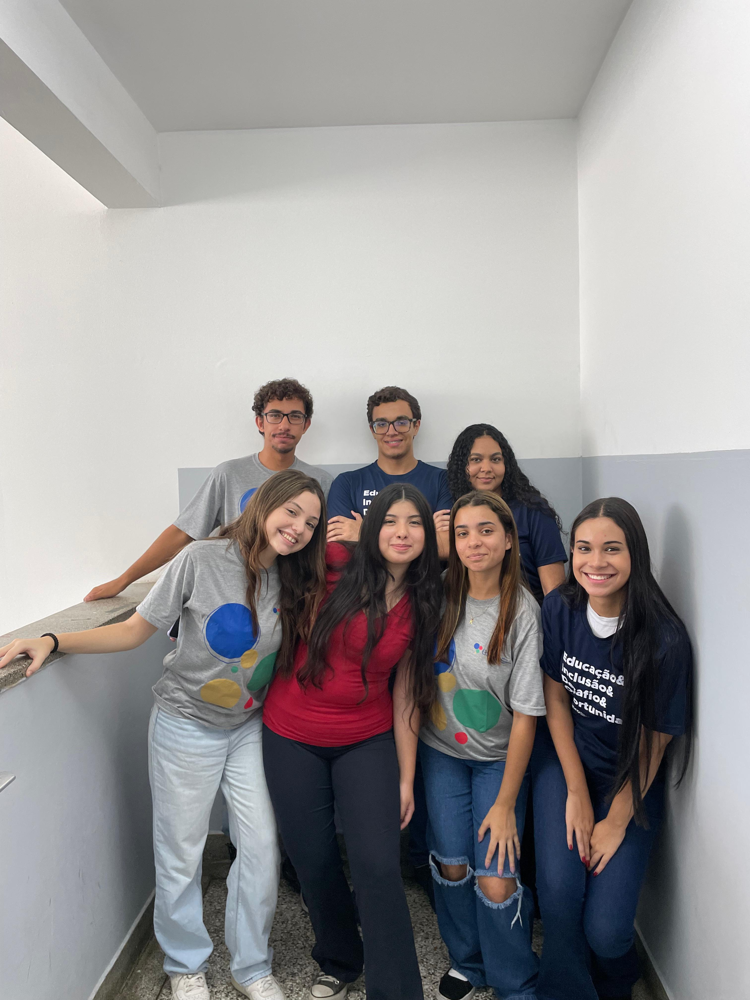
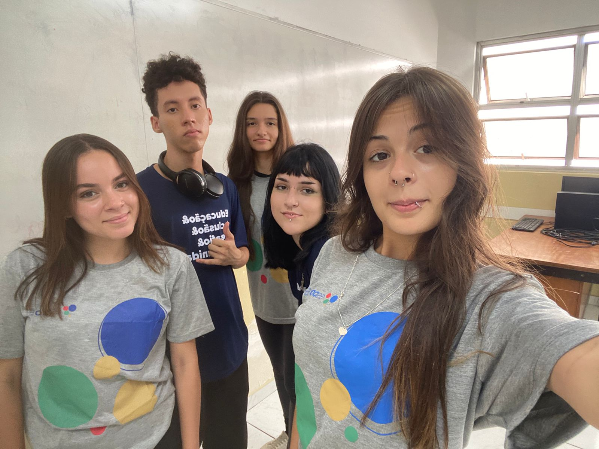

Departamento de RH
“PEDRO HENRIQUE, 18 ANOS, ESTÁ NO ESPRO A 9 MESES E ELE DIZ QUE GRAÇAS AO
ESPRO ELE APRENDEU E DESENVOLVEU HABILIDADES QUE SÃO ESSENCIAIS PARA SUA
CARREIRA”
“STEFANY, 18 ANOS, ESTÁ NO ESPETO A 7 MESES E SE SENTE MOTIVADA A IR NO ESPRO POIS ACREDITA E TEM A CERTEZA
QUE ESTÁ CONSTRUINDO UM FUTURO MELHOR.”
Departamento de T.I
“MARIA EDUARDA, 18 ANOS, ESTÁ NA ESPRO A 8 MESES, E NESSE MEIO TEMPO CONHECEU PESSOAS INCRÍVEIS,
PRINCIPALMENTE DO SETOR QUE FAZ PARTE NO PROJETO GESTORES DO FUTURO, QUE É O T.I, E TEVE A OPORTUNIDADE
DE APRENDER MAIS SOBRE O MUNDO CORPORATIVO E ABRANGER SUA VISÃO SOBRE O MERCADO DE TRABALHO.”
“LUCAS COELHO, 18 ANOS, ESTÁ NA ESPRO A 10 MESES, NESTE PERÍODO ENCONTROU NOVAS AMIZADES INCRÍVEIS,
DESENVOLVEU SUA HABILIDADE DE COMUNICAÇÃO E APRENDEU CADA VEZ MAIS SOBRE O MUNDO CORPORATIVO EM
SEU DIA A DIA.”

DEPARTAMENTO DE FINANÇAS
“RAFAELA, 17 ANOS, ESTÁ NO ESPRO A 9 MESES E NESSE MEIO TEMPO APRENDEU MUITAS HABILIDADES TÉCNICAS E
PESSOAIS, ENTRE ELAS A COMUNICAÇÃO POIS ACREDITA QUE É A PARTE MAIS DESAFIADORA.”
“GABRIELA, 18 ANOS, ESTÁ HÁ 2 MESES NA ESPRO NESSE PERÍODO ADQUIRIU EXPERIÊNCIA NO PROJETO DE TURMA
GESTORES DO FUTURO E LHE DEU AUTONOMIA NESSE PROJETO E RESPEITO ENTRE OS COLEGAS DE CLASSE.”

DEPARTAMENTO DE MARKETING
“LAYANE, 18 ANOS, ESTÁ NA ESPRO HÁ 1 ANO E ACREDITA QUE É ALGO DESAFIADOR PORQUE ELA ACREDITA QUE SE
DESAFIA TODOS OS DIAS NA ESPRO COM A EXPECTATIVA DE SER CADA DIA MELHOR.”
“EMILY, 17 ANOS, ESTÁ NA ESPERO A 1 MÊS E NESSE TEMPO JÁ PERCEBEU QUE A ESPRO É ALGO INCLUSIVO POIS VÊ QUE
É UM LUGAR ONDE TODOS TEM A OPORTUNIDADE DE CRESCER JUNTOS.”

DEPARTAMENTO DE COMUNICAÇÃO E EVENTOS
“ISABELLA VITORINO, JOVEM DE 19 ANOS, ESTÁ NA ESPRO HÁ 10 MESES, ELA RELATA QUE A ESPRO ELA CONSEGUIU
DESENVOLVER SUA HABILIDADE DE COMUNICAÇÃO.”
“MATHEUS CÂNDIDO, DE 19 ANOS, ESTÁ NA ESPRO APENAS HÁ UM MÊS. ELE RELATA QUE A ESPRO AUXILIOU
BASTANTE EM MELHORAR SUA COMUNICAÇÃO E MOSTROU A IMPORTÂNCIA DA DISCIPLINA E DO FOCO PARA O
MERCADO DE TRABALHO.”